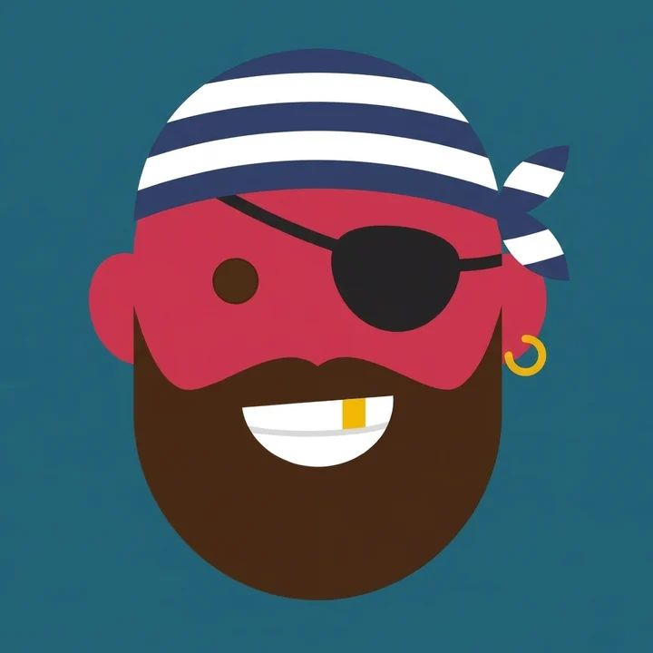
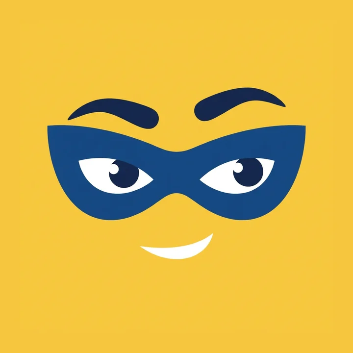
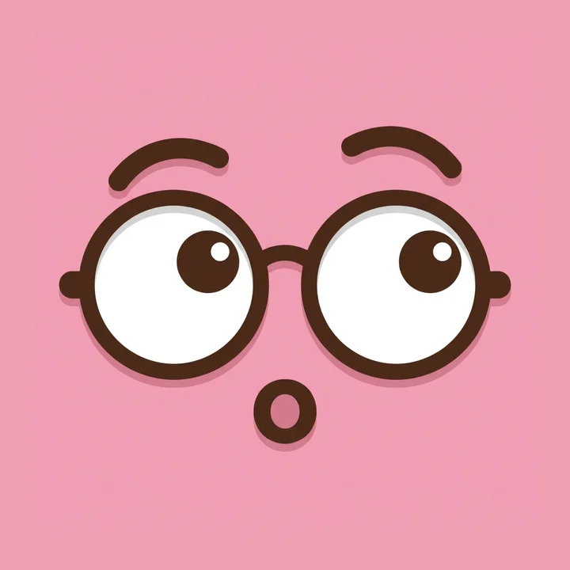

Les six avatars
En carré arrondi, la forme décidée. Le Galet est la figure neutre par défaut ; les cinq autres sont de la famille du flâneur. Les voir dans la barre →





En carré arrondi, la forme décidée. Le Galet est la figure neutre par défaut ; les cinq autres sont de la famille du flâneur. Les voir dans la barre →


